赏红叶之慕田峪长城
出行地点：北京怀柔 · 慕田峪长城
出行时间：2018年10月27日
今天又是一条好汉！
历史
危岭雄关明城墙
蓝丽娜漆画《慕田峪金秋图》
慕田峪长城位于北京市怀柔区境内，距北京城区73公里。长城全长5400米，是中国目前最长的长城，也是国家AAAAA级旅游区。其历史悠久，文化灿烂，在中外享有“万里长城，慕田峪独秀”的美誉。
中国南北朝时的北齐（公元550年—577年），就在慕田峪筑有长城，明朝初年重建。据文献考证，慕田峪长城是明初朱元璋手下大将徐达（曾被封为中山王，也被称为中山）在北齐长城遗址上督建而成。（《同治十二年迁安县志》记载：“明初，徐中山筑边城墙，自山海关西抵慕田峪，一千七百余里，边防可云密矣。”）
公元1404年（明永乐二年）建“慕田峪关”。（见《日下旧闻考》·边障·卷一百五十三·二四六六页。）
公元1569年（隆庆三年）明穆宗朱载垕特命抗倭名将戚继光以都督同知总理蓟镇、昌镇、保定三镇练兵事，率军对慕田峪段在内的二千里长城进行整修，隆庆五年秋建成遗存至今截止2013年，慕田峪所保留修复的长城，是全国明长城遗迹中保存最好的地段之一。
慕田峪长城西接居庸关，东连古北口，为京师北门黄花镇的东段，自古被称为拱卫京师、皇陵的北方屏障，而慕田峪关更是明代拥护京师和明皇陵的重要关口之一。（《长安客话》卷七·关镇杂志）
摘自百度百科
交通
旅游专线一站直达
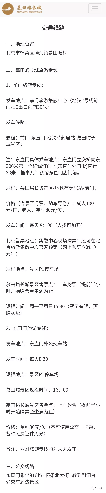
去慕田峪的方式很多，老老实实坐916快公交车、省事跟团一日游、亦或乘坐慕巴士，都是不错的选择。但我还是更信任官方标配的旅游专线，早上8:00坐地铁到达东直门，出站步行10分钟左右就是东直门外公交车站，几乎一眼就能望到“慕田峪专线”的标志，位置很好找。
旅游专线班车内部宽敞干净，即使是周末人也不算多，一半是金发碧眼的老外。
8:30准时发车，到达游客中心预计需要一个半小时，但可能会因堵车而延长。下午16:00老地方搭车返程。
门票
年轻任性纯步行
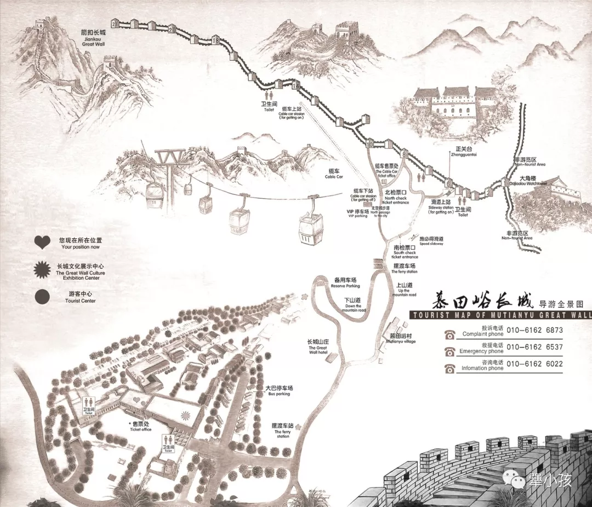
图片来源：慕田峪长城旅游网
对照地图来说一说。旅游大巴一般只会把游客送到游客中心售票处，距离真正的景区入口还有2.5公里，所以买摆渡车的票是必须的。上车需要稍微排会儿队。
想必稍微做了点攻略的朋友都应该知道，在慕田峪快速爬上长城有三种方式：滑道、索道和缆车。
（以下均为景区标准票价，在美团马蜂窝购买有一定的优惠。）
景区门票：
45元 / 成人；25元 / 学生（凭学生证）、1米4以下儿童、60岁以上老人（凭身份证）；免票 / 1米2以下儿童、65岁以上老人（凭身份证或老人证）
景区摆渡车：
15元 / 双程
厢式缆车：
120元 / 双程；100元 / 单程
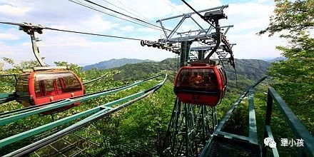
（缆车）图片来自网络
索道和滑道是绑定的，上行是索道，下行可以索道滑道二选一：120元 / 双程；100元 / 单程
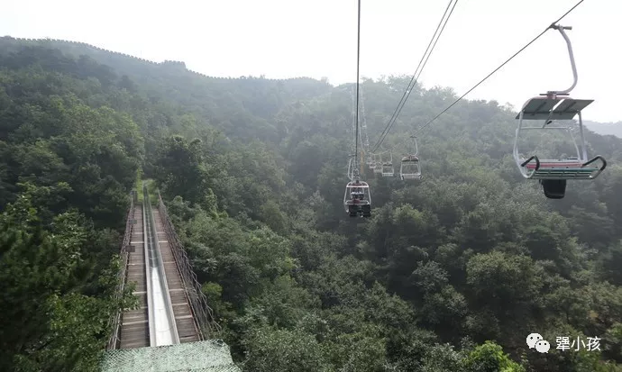
（左：滑道 右：索道）图片来自网络
备注：厢式缆车至第14烽火台；索道至第8烽火台。两者由不同的公司承包，不能通用。这意味着如果你想缆车上索道下，就要付双倍的钱（100+100）。双程票需要注意的是，必须原路上下乘坐。
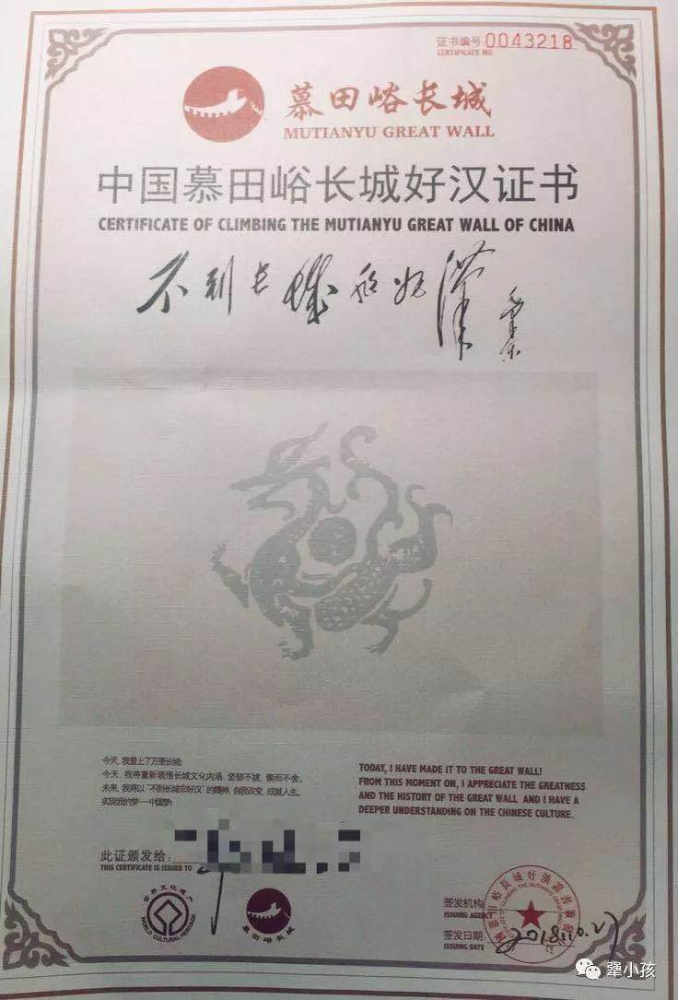
买完票还可以免费领一张好汉证书，还有专人帮忙签名，可以选择不要照片（30元 / 张）和明信片（10元 / 张）。
路线
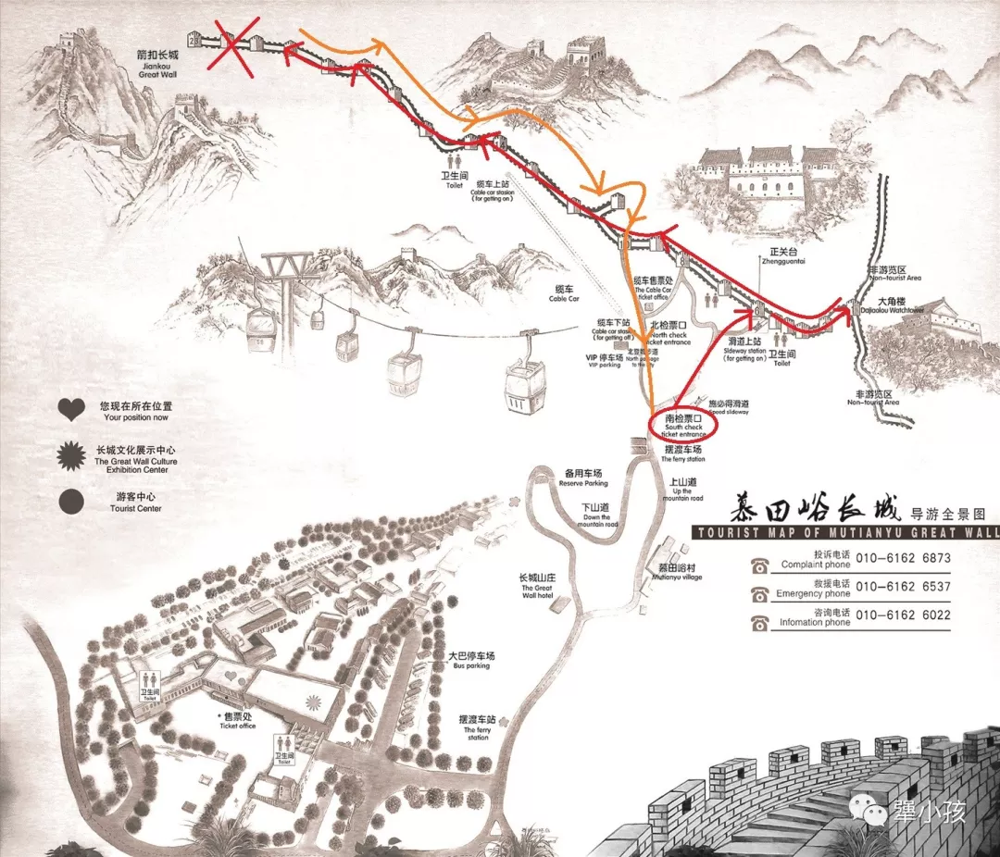
综合考虑各方面的因素（由于穷），最终我选择步行上下山。步行上山有三条路线，分别抵达：第6、第8和第10烽火台。如果想去最右边的大角楼，第6烽火台为最佳；如果想尽快登顶，第10烽火台最好不过。
因为想览尽长城风光，我选择从南检票口出发前往第6烽火台，虽说要多爬700级台阶，其实20分钟就到了，权当热身吧。
先走的东线，往返共用时20分钟：
从第6烽火台出发，很快就看到了大名鼎鼎的第4烽火台，即正关台，又称慕田峪关，其三座敌楼并立，为长城建筑史上罕见。在经历了几个大起伏的上下坡之后，我终于有点“爬长城”的感觉了。最东边占据制高点的是第1烽火台，又名大角楼。此楼三面有长城，一条向西与八达岭相连；一条向东，与古北口相连；一条向南，为内支城，因从长城任何一个角度看，都似一个城角，故名大角楼。
东侧的红叶不算多
挑战风景如画的西线：
我几乎全程都在走，中间只稍作休息，吃点肉干补充营养，到达第14烽火台的观景平台时发现才下午一点左右。第10到第15烽火台，是观赏红叶的最佳地点，风景也最美，相应的人也会多一些。第15烽火台还是电影《非诚勿扰Ⅱ》的取景地，可以合影留念。
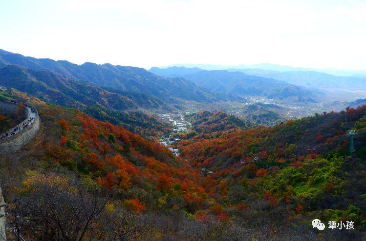
真正的层林尽染
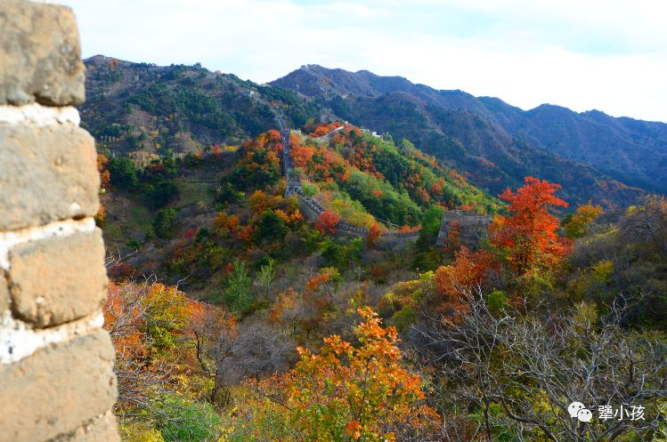
色彩斑斓 旖旎风光
我当时远远望着这条逶迤曲折的长龙，内心一瞬间有放弃的念头，实在是好长啊。但被同伴各种鼓励，一步步走着也就到了。
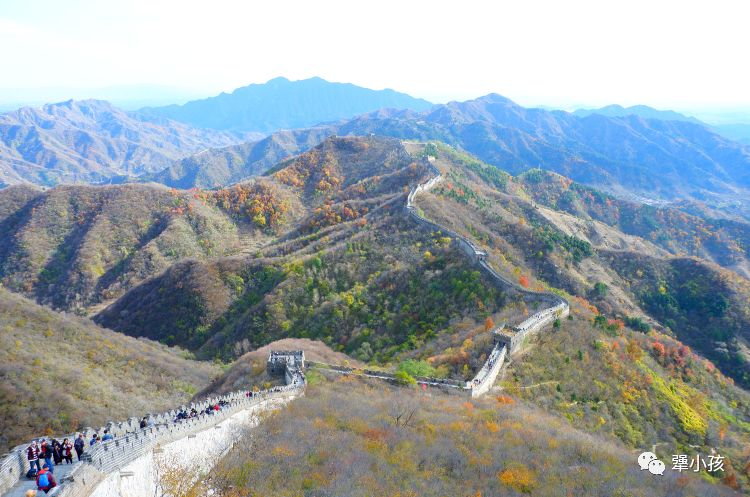
令人怯场的长龙
从第16烽火台开始，明显的植被变少了，有点荒凉。也没啥可以拍照的，一门心思往前冲。最后冲刺第20烽火台的那一长段台阶，可以说是地狱级别了。几乎没有缓冲的平地，走几步停一停，用时还比前几个加起来要长。
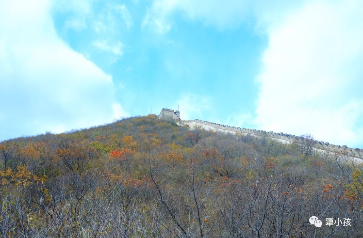
感受一下高度
最后几步路几乎手脚并用，完全不敢回头看，连想一想都发软。
难上也难下 所谓骑虎难下
登顶的感觉很莫名，没有任何标识，少了某种仪式感。一墙之隔后面就是“野长城”，一帮背包客居高临下地看着我们。很想翻墙过去，和他们一样走一走最险峻雄奇的箭扣长城，看一看最原汁原味的长城景色。
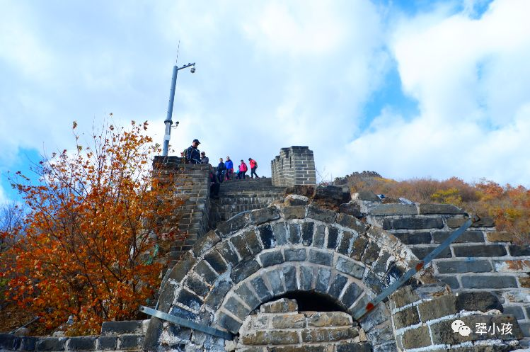
你瞅啥 瞅你咋地
等我们返回到第14烽火台，时间是下午两点半，也就是说我们用三个小时左右爬完了长城。由于时间充裕，我们还去外支城第11烽火台转了转（支城，即在主长城之外根据战事需要顺山势又节外生枝修出的长城）。下午三点整从第10烽火台下山，然后搭乘摆渡车返回停车站，大概用时45分钟，卡点刚刚好。
拍照
映日秋叶别样红
选一个光线明亮的晴天非常重要！阴天和多云，拍出来的照片会显得很暗，全都糊成一团就失去了对比，也就没有层次感。
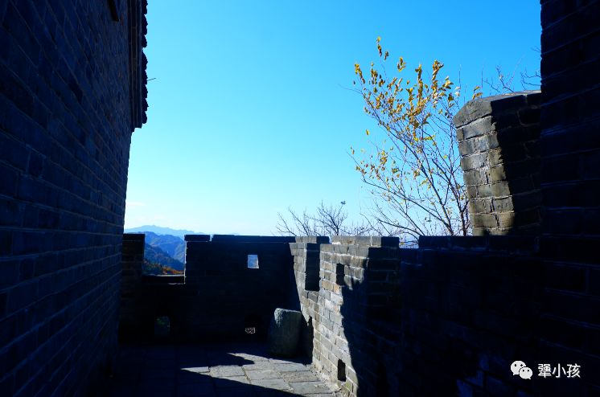
光影很好看吧
蓝天与红叶相映衬，色彩的质感也就非常饱满。
备注
1、注意开放时间
08:00 - 17:00 (11月16日 - 次年3月15日 周一 - 周日)
07:30 - 18:00 (3月16日 - 11月15日 周一 - 周五) 07:30 - 18:30 (3月16日 - 11月15日 周六 - 周日)
厢式缆车：夏季 08:00 - 17:00；冬季 08:30 - 16:30
索道和滑道：周一至周五 08:00 - 16:50；周六至周日 08:00 - 17:00
2、出门看天气，雨天慕田峪景区可能不开放。
3、穿一双好鞋、一定要吃早餐、备好干粮和热水。
4、下山注意保护膝盖和关节。
5、遗憾的是，没看到落日照长城。

...
...
Thank you for reading my article!